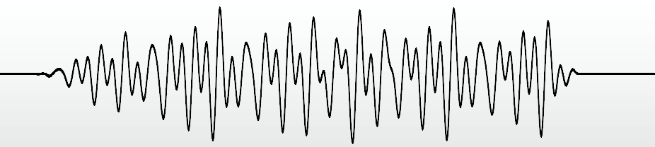

Autor: Paweł Koniarski
Fala akustyczna o płynnie zmieniającej się amplitudzie, trudna do opisania wzorem matematycznym.
Dlatego aby umożliwić przechowywanie dźwięków na komputerze dokonuje się ich digitalizacji.
Zamiana na postać cyfrową.
Próbkowanie (ang. sampling) – pomiar wartości amplitudy dźwięku w równych odstępach czasu i zapisanie tych wartości w postaci liczbowej.
Próbka (ang. sample) – zapis dźwięku powstały przy użyciu próbkowania.
Jakość próbki zależy od:
Często wykorzystywany format do zapisu dźwięku nieskompresowanego.
Najczęściej używany do zapisu na płytach CD:
Rozmiar pliku zawierającego minutę nagrania w formacie jak na płycie CD:
$\frac{60\mathrm{s} \cdot 44100\frac{\text{próbek}}{\mathrm{s}} \cdot 16\frac{\mathrm{b}}{\text{próbkę}}}{8\frac{\mathrm{b}}{\mathrm{B}} \cdot 10^6\frac{\mathrm{B}}{\mathrm{MB}}}$$\cdot 2$$\ =10.584\mathrm{MB}$
Kompresja stratna bazująca na wadach ludzkiego ucha. Matematyczny opis tychże cech nazywa się modelem psychoakustycznym.
Pozwala na nawet dziesięciokrotne zmniejszenie objętości pliku bez utraty słyszalnej jakości.
Komputerowy odpowiednik partytury.
Sekwencer – specjalny program umożliwiający komponowanie muzyki w postaci nutowej.
Umożliwia wymianę danych z elektronicznymi instrumentami muzycznymi (np. keyboardami).
Ma bardzo małą objętość, lecz dźwięk jest ograniczony do ustalonego z góry zbioru instrumentów
Przykład muzyki stworzonej w formacie MIDI: